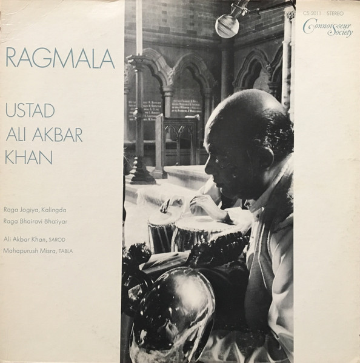

LP
Ragmala
Ali Akbar Khan
Media: VG · Sleeve: VG
—
Personal
Discogs SuggestedCA$55.01
Discogs MedianCA$55.01
Discogs HighCA$55.01
- Physical Copy ID
- BB-LP-171
- Year
- 1969
- Label
- Connoisseur Society
- Catalog #
- CS-2011
- Country
- USUS
- Genre / Style
- Folk, World, & Country · Indian Classical, Hindustani